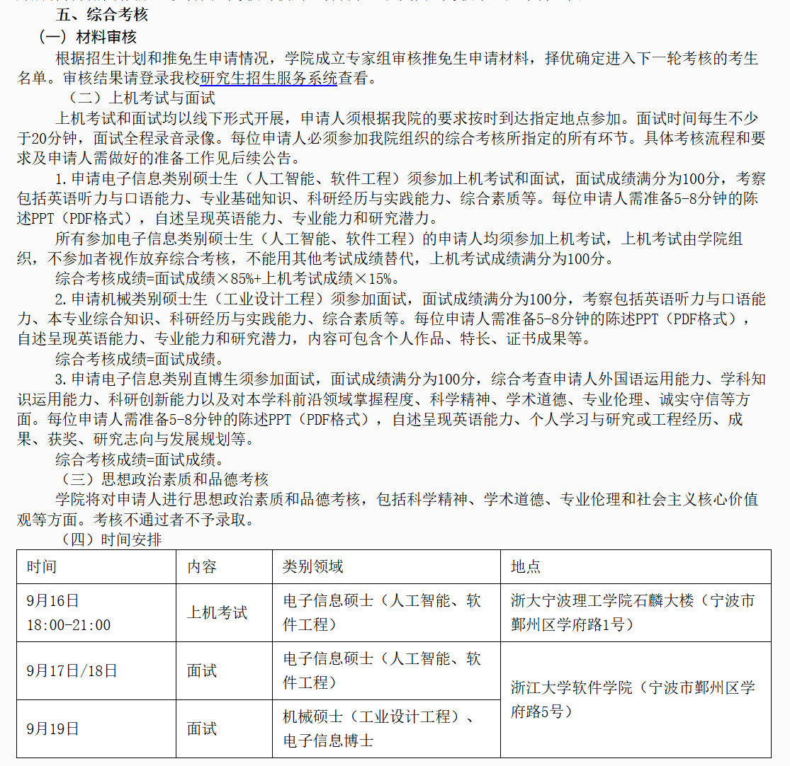

FIELD NOTE / 2026
浙江大学软件学院
预推免
机试占 15%、面试占 85%；综合面试包含抽取专业题与科研追问。
机试 3 小时 / 6 道题个人机试 62 / 100综合成绩：面试 85% + 机试 15%
01 / 整体流程与成绩构成
- 预推免主要分为上机考试和面试两个部分。按当年的安排，9 月 16 日晚先进行上机考试，电子信息硕士（人工智能、软件工程）在 9 月 17—18 日进行面试。
- 上机考试满分 100 分，面试满分 100 分，综合成绩按“面试成绩 × 85% + 上机考试成绩 × 15%”计算。虽然机试只占 15%，但最终同学之间的总分差距往往很小，因此实际影响并不小。
- 当时进入软件学院预推免的人数大约在 800 人左右,线下实际参加大概是500人。整体入营 Bar 较高（211rk1，985前10%），竞争比较激烈。

02 / 机试内容与实际体验
- 机试时长为 3 小时，共 6 道题，满分 100 分。我当时得了 62 分，机试排名大约第 100 名。第一题本身比较基础，主要考含空格字符串的整行输入；我当时忘了对应的输入方式，导致这道题没有得分。按当时的分数分布估计，如果第一题的 10 分拿到，机试排名大约可以提升到 30～40 名左右。
- 除第一题外，后面几题整体都有一定难度。按我的体感，大约有 3 道 Medium 难度和 2 道 Hard 难度。题目不仅考常规算法，也会出现需要观察规律、结合数学结论才能快速解决的题目。
- 其中有一道题和多面体有关，需要判断至少安排多少人才能覆盖所有角落。这个题如果知道对应结论，代码本身很短；我当时是在考场上通过画图、观察和总结规律，把结论自己推了出来，最后也做出了这道题。
- 机试对最终排名的影响比“15%”这个权重看起来更明显。我最后综合排名大约第 160 名；按我当时对分数差距的估计，如果第一题多拿 10 分，换算到最后分数上也就是1.5分，最终排名可能提高到约第 60 名左右。因此机试不能只当作一个权重较低的附加项。
03 / 面试形式与实际体验
- 面试每人大约 20 分钟。前面需要进行 5～8 分钟的 PPT 陈述，其中约 1 分钟使用英语，之后进入老师问答。
- 进入面试前会先抽一道专业课题。PPT 结束后先回答抽到的专业题，我当时抽到的是计算机网络中的“路由聚合”相关问题。部分细节我记得不够完整时，老师会顺着问题进行提示和引导，整体氛围比较友好，压力并不大。
- 专业课题结束后，后面的问答主要围绕科研经历展开，会继续追问项目方法、模块设计、实验以及自己在科研中承担的工作。
04 / 正式面试问题整理
- 计算机网络：路由聚合是如何实现的？路由聚合有什么作用？
- 科研方法：第二篇论文中的混合粒度注意力具体如何实现？不同粒度特征如何构造、交互与融合？
- 科研方法：两阶段解码器的第一阶段和第二阶段有什么区别？是否做过只使用第一阶段或只使用第二阶段的消融实验，效果如何？
- 科研经历：在你参与的科研工作中，你认为自己做得最好的是哪一部分？
- 英文部分：PPT 自我介绍中约 1 分钟使用英语。
05 / 结果、Bar 与机试影响
- 我最终综合排名大约第 160 名，后续获得了优营。按我当时了解到的情况，前面大约给出 100 个直接名额，后面再设置约 100 人的候补范围，候补也会继续顺延。
- 软件学院近年的 Bar 在持续提高。按我当时观察，很多 211 学校基本要到 rank 1 才比较有竞争力，而且即使是 211 的专业第一，也并不一定都能进入预推免。这里更适合作为当年经验参考，不代表以后每年都会完全相同。
06 / 导师联系与一个比较特殊的现象
- 软件学院整体更接近“强 com”筛选：即使提前进入老师课题组实习，也不代表一定能够通过学院统一筛选。我当时看到有同学三四月份就已经进组做科研，但最后仍然在预推免入围环节被教务筛掉。
- 这反过来也给没有提前套磁的同学留下了机会。由于统一筛选会淘汰一部分已经提前联系老师的学生，一些实力较强的老师在预推免结束后仍然可能继续招生，因此比较晚联系老师，也不一定完全没有好老师可选。
- 另外，我接触到的软件学院老师招生名额相对较多，不少老师大约有 6 个左右的招生名额。因此如果前期没有确定导师，也可以在预推免结果出来后继续主动联系；当然，如果目标非常明确，仍然建议尽早套磁。